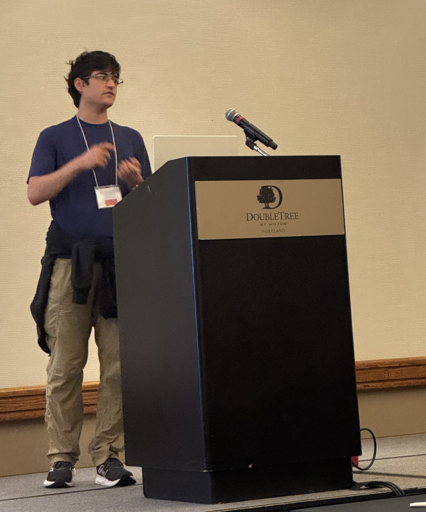

ac[last name] [at] andrew [dot] cmu [dot] edu
Computer Science Department
Carnegie Mellon University
I am a second-year PhD student at Carnegie Mellon University, working on parallel batch-dynamic graph algorithms. I am advised by Guy Blelloch. I am broadly interested in theoretical computer science, and designing algorithms that are efficient both in theory and practice.
I graduated from the University of Richmond in 2024, where I majored in math and in computer science. There, I worked with James Davis on finding partial difference sets.
Besides research, I like to play board games, run, play squash, and social dance.
If you're interested in collaborating, discussing parallel algorithms, or have any questions about my research, feel free to reach out!